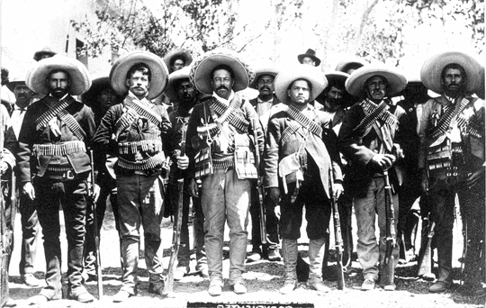
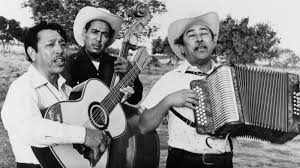
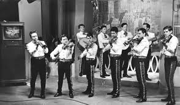

1900-1910
A Popular Song: El Corrido De Gregorio COrtez
Corridos
- One of the first Corridos made during the 20th century
- However, Corridos have been around since the 19th century
- A Mexican Corrido is a style of music that tells a story
- Oftentimes, a Corrido Speaks of Politics, the story of a famous person, or drug trafficking, among other topics
1911-1920
A Popular Song: Corrido De Jacinto Treviño

- Like the prior decade, this decade was told through Corridos
- During this time, the Mexican Revolution was happening
- Naturally, many Corridos told stories of the Revolution
1921-1930
A Popular Song: Fiel Amor by Narciso Martinez
Nortenos

- During this decade, Norteno music emerged and became popular
- Norteno is a style of music that stems from Northern Mexico and is played with a waltz time signature
- The Accordion, Upright Bass, Bajo Sexto, and Guitar are intruments used in Nortenos
- Narciso Martinez is the founder of this style of music
1931-1940
A Popular Song: Pero Lupita
Mariachi

- Mariachi Became popularized in this decade with the help of media such as radio and cinema
- A specific sub-genre of Mariachi called Rancheras were played during this period
- Mariachi music is often played with Vihuela, Guitar, Violins, Trumpets, Guitarron, and sometimes a harp